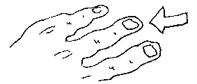
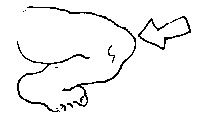
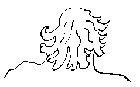
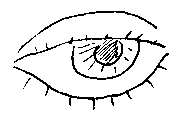
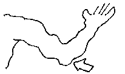
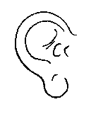
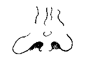
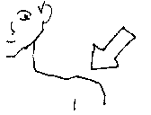
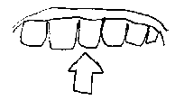
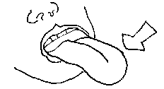

|
Jèrriais |
Angliais |

|
êt' coumme la main et l'gant |
to be hand in glove |
|
un coup d'main |
a helping hand |
|
aver bouanne main |
to have green fingers |
|
un co d'poing |
a punch |
|
donner un coup d'paûmé à tchitch'un |
to holler to someone |
|
châtchi d'main |
shake hands |
|
s'en laver les mains |
to wash one's hands |
|
nou n'vait pon la main d'vant sé |
one can't see one's hand in front of one's face |
|
d'deuxième main |
second hand |
|
s'laîssi tchaie l'pônchet dans la main |
to be at a loose end |

|
haler sus la gambe à tchitch'un |
to pull someone's leg |
|
|
|
|
piler sus les pids à tchitch'un |
to tread on someone's toes |

|
fîn coumme un g'veu |
hairsbreadth |
|
des g'veux d'Judas |
red hair |
|
jusqu'ès p'tits g'veux |
to one's fingertips |

|
sèrvi au dé et à l'yi |
waited on hand and foot |
|
s'brûler les dés |
to get one's fingers burned |
|
aver les dés longs |
to be light-fingered |
|
mettre l'dé d'ssus |
to put one's finger on it |

|
l'ver l'coute |
to drink too much |
|
dé l'hielle dé coute |
elbow grease |
|
|
|
|
tchaie sus l'co à tchitch'un |
to arrive unexpectedly |
|
êt' lé co souos l'yi |
to be in ruins |
|
|
|
|
coumme un cat tchi n'a qu'eune ouothelle |
bizarre |
|
aver grand's ouothelles et p'tit bé |
to listen but not repeat what is said |
|
aver l'ouothelle près du bonnet |
to be hot-tempered |
|
payi coue et ouothelles |
to pay an arm and a leg |

|
aver tête et bonnet |
to be stubborn |
|
crier à tue-tête |
to shout at the top of one's voice |
|
les grôsses têtes |
bigwigs |
|
d'la tête ès pids |
from head to foot |
|
la tête mé touônne |
I feel giddy |
|
aver la tête souos l'aile |
to be ill |

|
aver l'nez haut |
to be stuck up |
|
freunmer la porte au nez à tchitch'un |
to shut the door in someone's face |
|
n'vaie pon pus liain qu'san nez |
to see no further than one's nose |
|
|
|
|
eune fache dé bouais |
a poker face |
|
êt' houmme à deux faches |
to be two faced |
|
lé doubl'ye-fache |
hypocrite |
|
fache à fache |
face to face |

|
haûchi l's êpaûles |
to shrug |
|
donner un co d'êpaûle à tchiquechose |
to put one's shoulder into something |
|
|
|
|
en aver dos et ventre |
to have loads |
|
|
|
|
bailli la joue à tchitch'un |
to kiss someone |
|
aver la joue souos l'yi |
to be in good health |

|
faithe dé tchi à londgeu d'dents |
to do something reluctantly |
|
prendre lé mors ès dents |
to take the bit between the teeth |
|
|
|
|
à flieur dé bras |
with all one's strength |
|
bras d'ssus bras dssous |
arm in arm |
|
|
|
|
|
|
|
s'touônner les sangs en lait d'beurre |
one's blood runs cold |
|
sang-fraid |
sang-froid |
|
|
|
|
i'n'reste ni tchiêsse ni aile |
everything is gone |
|
des gens d'la tchiêsse dé Jupiter |
the upper crust |
|
|
|
|
êt' sus san tchu |
to be stony broke |
|
aver un bouan tchu à ses braies |
to be comfortably off |
|
êt' lé tchu entre deux selles |
to fall between two stools |
|
|
|
|
aver d's ièrs d'cannotte en pamouaîson |
to make sheep's eyes |
|
saver d'tchi par tchoeu |
to know something by heart |
|
aver lé tchoeu près des lèvres |
to be on the verge of throwing up |
|
haler au tchoeu |
to retch |

|
pâler sus l'but d'sa langue |
to lisp |
|
aver tchiquechose sus l'but d'sa langue |
to have something on the tip of one's tongue |
|
la langue m'a fourtchi |
I made a slip of the tongue |
|
|
|
|
|
|
|
tchaie becque à barbe auve tchitch'un |
to bump into someone |
|
|
|
|
souongni d'sa pé |
to look after oneself |
|
sauver sa pé |
to save one's skin |
|
i' vente la pé du dgiâbl'ye |
it's blowing a gale |
|
trempé jusqu'à la pé |
soaked to the skin |
|
jé n'voudrais pon êt' dans ta pé |
I wouldn't want to be in your shoes |
Viyiz étout: